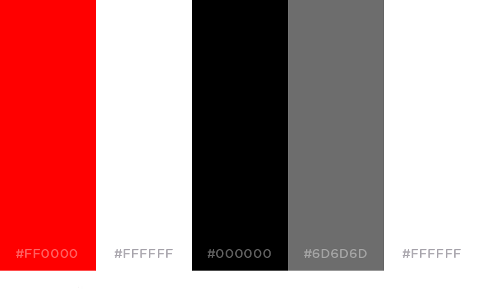
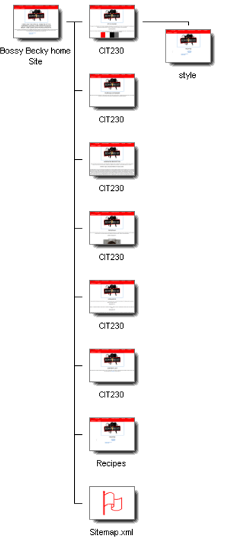
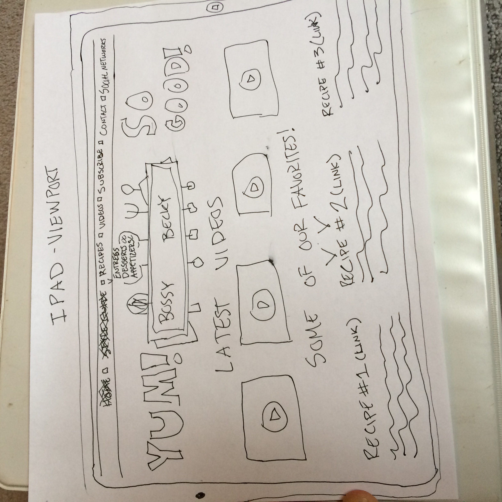
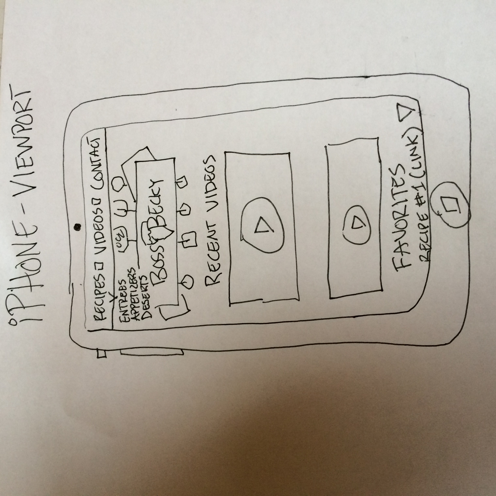
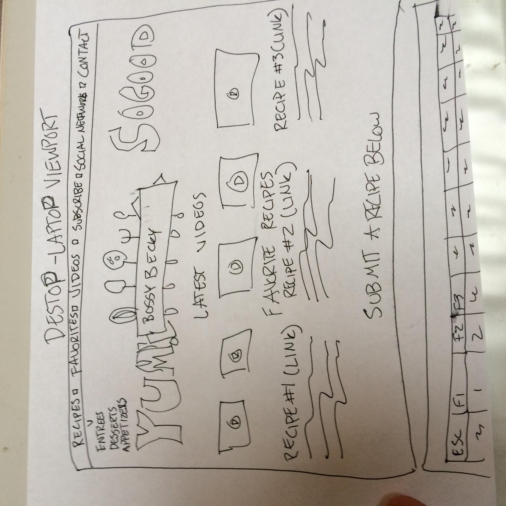

Home
Favorite Recipes
Blog
Social Networks
Request A Recipe
Recipes
Contact Us
Brother Paul Cheney, this is the page you're looking for!!!
Below will be the
Scenarios
portion of the site, which is to represent tasks or questions that members of the target audience would ask about the content of the site
Scenario 01:
Jonny E. Is looking to recreate a recipe online, he submits a request for Becky to cook up, and watches the video to see if the recipe is any good.
Scenario 02:
Jenna saw a short video on facebook that shows a quick way to make icecream with a can of raspberry lemonade concentrate. Upon a more in-depth google search, she finds bossybecky.com and watches the more in-depth video.
Scenario 03:
Jonny E. does not any cookware, and needs to know what to buy to properly prepare a quick homemade recipe involving a castiron pan and dough with creamcheese bites.
Scenario 04:
Jenna is curious how much cleanup a specific crockpot cake recipe is involved after making the recipe. She watches the video on bossybecky's youtube, then see's its quite a mess!
Scenario 05:
Jonny goes to foursisters cooking site, and finds a recipe on pumpkin spice-cream cheese filled cookies, and is curious on how many people he could serve with the current recipe.
Scenario 06:
Jenna is curious to see what a recipe actually looks like that she's found online. Many are just in text form with one picture. She googles the keywords for the recipe and finds bossybecky's video which details the preparation of said recipe.
Scenario 07:
Jonny E. is looking on Bossybecky.com for any quick and easy recipe to find out what he should cook for an upcoming date.
Scenario 08:
Jenna is bored and surfing the internet, and stumbles through the website. She may not actually use it for the recipes, however she represents traffic for thr site and helps to pay for advertising by creating sessions through google analytics.
Personas
Below will be the Personas portion of the site, which is to represent the personas as 2 seperate test cases for whom this site will be geared towards, and to be used as a template for the gauging of marketing content, collaterol, and representation.
Male Persona #1:
Name: Jonny Eberle
Job Title:
Foriegn Consultant
Responsibilities:
Reporting on Foreign matters, both political and militarily for government and private orgranizations
Demographics:
47 years old, no formal education, however has been in the military since he was 18, recently getting out 2 years ago with a U.S Government style retirement plan, which isn't that good to be honest. He's a causcasian, divorced, recently has been dating as much as he can as he feels the tugs of traditional American family archetypes on his heart and mind. By visiting the site, what he's trying to accomplish is seeing if making a cake in a crock pot is actually in fact romantic and tasty, for an up-coming date. He's seen small viral videos about making a cake in a crock pot, however he'd like to see how easy and what the clean might look like. He's a fairly in shape man, however with time and the ever increasing amount of time he spends at his desk typing, his boddy is starting to sag in all the wrong places. As a highly intelligent and semi-social individual, which was required for Special Forces selection and placement into foreign regimes for toppling, he feels his strongsuit are his travels into other countries and his experiences in life. He is also highly skilled with modern markup and mathematical algorthyms on a computational scale from being a vet during the late 90's when technology started to escalate, so the government poured funding into him perfecting mathematics and logarythymic tones and queues. He is a highly meticulous man with regards to how he is presented towards anyone. While his personal arrays are in an unimaginely tangled mess behind closet and bedroom doors, the areas in which he plans to entertains his guests and dates are meticulously swept and very kept. His plans for using this site are to gauge whether this cake would be a good decision for his date, given that it is the laziest way to make a cake, he is extremely interested.
Quote: If this chocolate cake isn't good, I'm probably going to die single.
Female Persona #1:
Name: Jenna Martinez
Job Title:
Unemployed at the moment, working on it, okay?
Responsibilities:
Getting married to make her mom happy, and probably finishing up school one of these days.
Demographics:
Shes a Multi-racial 24 year old female who enjoys cooking in her freetime, and shes very interested in this receipe for sherbet that calls for use of a frozen concentrate can of Raspberry lemonade. She is unmarried, not really looking around. She's fairly fit, but age and metabolism have been her friend so far, however she loves sweets, therefore the effects will be advancing the older she becomes. She's hoping to graduate from her local community college, in 2 years she's booked 12 credits, so it's gonna be awhile. If ever. Her apartment where she lives with a friend from high school is fairly clean, aside from during the occasional party that they throw. She's been on a phone plan provided by her parents for the last 8 years, and she has a very basic netbook, from the age of when netbooks were thought to be "The Next Big Thing". It's an essentially useless laptop by today's standards, and can barely render a tradional webpage. She uses it only for word processing for school during the occasional document that is due. So, she uses her iPhone which her father graciously upgrades every 2 years for her to the newest device. Mostly she is looking at the site out of boredom, and is just scrolling through. Essentially displayed on Google analytics as a bounce as she skips throughout the site trying to find what she needs.
Quote:
Hmm, this looks good.
Audience Description
Below will be the Audience Description, an archetypal list of subgroups whom is deemed to be test cases in which this site is geared towards. This is not to be miscontrued as a solely these subgroups of personalities, races or gender purposes for the site.
Gender, Ages, and personalities of Typical users:
The target audiences for this site are going to be generally those who enjoy cooking! Typically from previous analytics reports of sites who's sole claim to fame is cooking, or food related, the majority tend to be women between the ages of 24 to an upwards of 64. The next largest group would be women under the age of 24, followed closely by men of the ages from about 35-55. Since gathering data from users under the age of 18 is illegal under some guidelines of the DMCA, that is an unknown factor, but gathering from the analytics of those who I have inquired of, this would not be a very large percentage. The typical likes and dislikes of this user group is stereotypical, unfortunately. However, with the site being niche, meaning targeting a smaller more specific crowd of users who wish to see how recipes will actually turn out as opposed to those who just want a quick recipe which is a much larger group. The users that were trying to target are those who enjoy making an appealing meal that will be remembered, and who care about what they're going to make and won't take someone's fleeting, biased opinion on if the food actually turns out good. We also plan on diving into the nitty-gritty, so to speak, of the meal prep work, cleanup, texture and many of the other aspects that are usually overlooked when a recipe is written and shared online. These individuals will also be interested to see us use common off the shelf ingredients along with sharing where we bought them, and attempting to our best ability to keep the science of cooking and preparing the food in the most scientific manner possible.
Economic & Education Range
The typical economic range that we're attempting to appeal to is going to be varied. We have already decided to niche by making videos our primary source of media along with some print text on the site and social media pages in addition to taking a non traditional appraoch to marketing a cooking channel on the internet. So we're attempting to appeal to those in the lower class, primarily middle class, and some upper-middle class. By doing so, we'll increase the target audience as much as possible without limiting or overextending ourselves and losing viability in our already established target markets.
Device Targeting
The device's that we're going to try and target are going to be primarily mobile and tablet media. The reason for this is that on multiple studies in addition to my professional clients that I manage, they take the majority of the view shares. In addition to easy social integration and sharing, they are going to be the focus. We'll be targeting the resolutions of the iPhone 5 series of phones, along with the standard resolution of the full size iPad. The Android archetecture is too diverse to support as many viewports, so therefore we'll be using the "em" markup and percentages in our CSS tables to hopefully scale the media in proportion with the device. For the sake of this class, we'll be building the site firstly on a standard HTML browser on a desktop, and building in functionality as we proceed down the road.
Content List
Below will be the Content List portion of the site, which is to represent a list of specific content that will be provided in order to answer or fulfill the needs listed in the
scenarios
section of the site.
Recipes Page
Content: This page will have a complete list of all the recipes we have ever cooked & recorded broken down into three columns, entrees, recipes, and appetizers. There will be minimal text, it'll either be pictures of the recipes or the embedded youtube videos with the circle and triangle play sign ontop of the youtube video screenshot cover.
Media: Lots of video links comprising three columns of typical meals, entrees, appetizers and desserts. There will be lots of video covers, a little bit of text where it makes sense and links to other cooking sites.
Entrees Page
Content: This page will consist entirely of entrees that we have cooked and recorded. It will be a little more expansive with text due to the specific nature of the page. We'll put simple descriptions under each video to describe exactly what it is, where we heard about it, where to find it on the internet, and a basic synopsis
Media: Lots of video and well styled text. I anticipate some light formatting using the approved color scheme and font implementation.
Appetizers Page
Content: This page will consist entirely of Appetizers that we have cooked and recorded. It will be a little more expansive with text due to the specific nature of the page. We'll put simple descriptions under each video to describe exactly what it is, where we heard about it, where to find it on the internet, and a basic synopsis
Media:Lots of video and well styled text. I anticipate some light formatting using the approved color scheme and font implementation.
Desserts Page
Content: This page will consist entirely of Desserts that we have cooked and recorded. It will be a little more expansive with text due to the specific nature of the page. We'll put simple descriptions under each video to describe exactly what it is, where we heard about it, where to find it on the internet, and a basic synopsis
Media:Lots of video and well styled text. I anticipate some light formatting using the approved color scheme and font implementation.
Social Network Page
Content: This page will be a basic page with links to some of our sponsors in addition to our social media accounts where users can find us and learn more about what we do and how to get ahold of us
Media: I will style some of my own icons that represent the various social networks that we are prevalent on. I would like to design my own using adobe illustrator to keep the form in congruency with the rest of the site.
Request a Recipe Page
Content: This page will have some basic styling around a wsywig editor to send us messages without creating a user account. it will have a name field in addition to an email form which will auto enroll whoever requests a recipe in our email campaign so we can let them know whenever we post their recipe or whenever we post anything that they might like, due to checkboxes that theyll select which indicate which types of food theyd be interested in seeing.
Media: Some fancy styling around a text box for users to send us feedback and information regarding what theyd like to see and what theyd suggest for our site.
Contact Us Page
Content: This page will have vendor specific information for advertisers to reach out to us to purchase advertising space on the website. I anticipate having a few 230x79 areas to sell out to bidders on a monthly basis. The fee will be dependant upon how many users we get during our first few months of traffic and if I can convince people to pay for spots
Media: Just basic contact informaiton styled in congruency with the rest of the site.
Favorite Recipes Page
Content: THis will be a well put together and constantly updated page of some of our favorite and recommended recipes that we've tried to cook.
Media:It will have videos that have a picture of the finished product of each item we've tried to make make and close by each will be a picture that the original owner of the recipe posted so the users can see the difference between the two recipes
Youtube Page
Content: This will be a link to a page that contains a massive lists of videos with no text. It will just be embedded youtube videos, so people that come to the site who are looking for something specifically but they forgot what it is called, they can scan this page to find it quickly.
Media: Lots of youtube embedded videos with no text. The titles are on the embedded cover picture of the youtube links. We'll keep all the videos bot on youtube and the site so we can keep user activity on-site to a maximum.
Articles Page
Content: This will be essentially a blog for users to read what's new with our site, our project and other pertinant news. We'll let people guest blog if they wish, such as large social networking groups, with approval of the text first of course.
Media: A blog-style architecture containing posts from various authors and me that have information about bossybecky.com, and what's coming.
Style Guide
This page is for outlining the Color Schemes, Typography, Navigation and rough sketches of this site, it's componenets, the branding and trademarks associated therewith. Below, all of the above will be outlined in excruciating detail.
Color Scheme
For the Color Scheme for BossyBecky.com, I decided to go with basic colors that contrast well against each other. Essentially gray, white, black and red. Nothing too fancy, but in its simplicity is beauty.

Typography
For our typography focuses, we're going to be using external fonts from Google's repositories. Namely we'll be using Roboto 100 thin, 300, and 400 in addition to Open Sans 700. The links to these fonts are inside the css file. Click
here
to view the css file.
Navigation
For the navigation bar on the site, we're going to be using a responsive bar that is stuck to the top of the screen. It also has hover and loading properties. It is in coordinance with our fonts and color schemes. Click
here
to view the css file to see the implementation of this style of navigation.
Responsiveness
We plan on building out to support primary iOS devices and desktop viewports. Currently we are using the "em" designation for sizing all of the content so that it can properly scale with any size. Later we will build out specific css and redirect pages that gauge the screen px density and redirect accordingly so as to maximize our viewers experience and create a pleasurable experience on the site.
Visual Sitemap

Device Sketches: iPad, iPhone, Laptop


